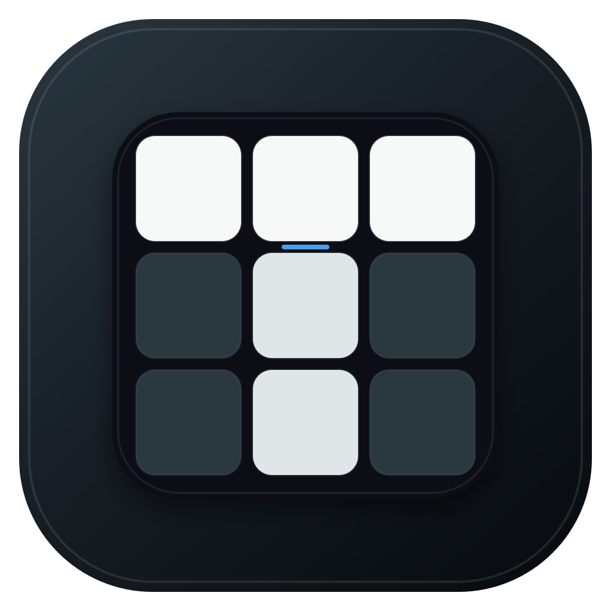

TrainTimer · Logo refinement 04
更少的线，更准的 T
重新建立在严格的 3×3 网格上：U 层是一条水平线，M 层是一条垂直线。去掉位移残影和额外装饰，只保留一个克制的转层登记信号。

Primary app icon · light / dark contextTrainTimer · Logo refinement 04
重新建立在严格的 3×3 网格上：U 层是一条水平线，M 层是一条垂直线。去掉位移残影和额外装饰，只保留一个克制的转层登记信号。

Primary app icon · light / dark context